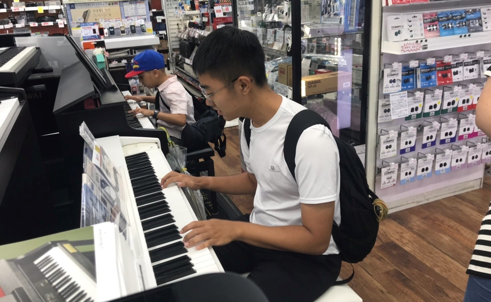

關於我
學歷
台北市中正區建國高級中學
台北市大安區台灣大學土木工程學系（就讀中）
語言、軟體
托福：TOEFL 96
程式：Java, Python
軟體：AutoCAD, Autodesk Revit, Sketchup
學習中：HTML, CSS, JS
喜愛去學習新事物、創新的我，也享受在與人交流的過程中，拓展自己的視野。從進大學到現在，因為這份熱情，主動去接觸了許多關於設計、創新的課程，期許自己能夠改變社會的人。
學術經驗
混凝土保齡球競賽
這是在美國土木系學生大學必定會參與的競賽，而台灣今年為第二次競賽。我參與了今年的比賽。
在這次準備過程中，藉由實際手做的過程，讓我得以應用在書本上所學到的知識。過程中雖然十分辛苦、疲憊，但看到從一開始的灌石膏模，到之後的灌混凝土、養護、拆模，一顆顆的保齡球映在眼前，心中更多的是感動以及雀躍。
灌石膏模
用蓋平石膏做出一個中空的石膏模
第一顆球誕生！
第一顆球十分不均勻，有待改進，但很可愛
第二顆球誕生！
陸續做出了七八顆球，越來越進步了！
載重測試
保齡球要被壓了！
筆記
實驗中陸陸續續寫了快十張這樣的配比筆記
隊員合照
做球終於告一段落了，大家很開心！
日本短期宣教
我是一個基督徒，我在今年暑假（大二升大三的時候）去了日本的大阪短期宣教，為期約三週，使我更多經歷了上帝的愛也體驗到了與不同文化交流之樂趣。
在這次的宣教中，我們到了大阪的近畿大學、大阪府立大學、關西大學、大阪大學等學校去傳福音。我們也舉辦了「台灣之夜」，介紹了台灣的特色以及文化給當地的學生，並分享我們的信仰。
在短期宣教的過程當中，有了許多機會跟日本的大學生合作、聊天，讓我能夠更打開我的眼界。雖然疲憊，但得到的卻是滿滿的感動！
聖書福音教會
抵達當地教會！

校園傳福音
與學校教授傳福音
校園傳福音
在圖書館前與學生傳福音
台灣之夜
上台分享～
台灣之夜
台灣之夜合照！
我的興趣
我有許多的興趣，其中最能幫助我放鬆以及紓壓的是看籃球比賽及彈鋼琴、吉他，因為這些興趣，我也認識了一些好朋友，能夠彼此分享我們的興趣，互相交流。
看籃球比賽
自高中開始，固定收看NBA已經成為我生活中非常重要的一部份。其中我最喜歡的球員是Lebron James。只要有辦法，我一定會撥出時間來看他的比賽。
而我也開始漸漸關注台灣籃球的比賽，世大運、SBL、ABL等等，也去過現場看比賽幫球員打氣。不管心情如何，球場上球員的熱血以及熱情，總是能夠使我深深被鼓舞。
彈鋼琴、吉他
大學以來壓力變大了些，音樂就成了我不論是開心還是難過時宣洩的管道。
我開始自己學了吉他、鋼琴，希望自己能夠像自己喜歡的歌手一樣，透過音樂、聲音來溫暖這個世界。
寫程式、小遊戲
上大學以後，開始接觸了程式設計，也開始喜歡上了這樣的邏輯思考，更開始動手做了幾個小遊戲
以下是我用Javascript做的幾個小遊戲，希望大家會喜歡：Ｄ
(5) Shooting (2 Player)
(6) Ghost Is Coming! (2 Player)
我的未來方向
在土木工程學系中，我較有興趣的主題是關於建築物結構以及耐震相關的方向。因此，研究所我會以結構組為目標。
目前同時也有修習木構造建築的設計施工，期待自己在研究所畢業以後能夠運用這些上課學習到的知識， 為台灣的土木工程打造一個更好的環境。